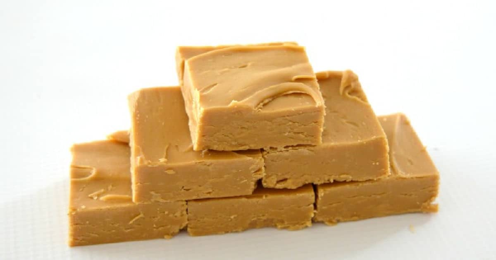

Fudge

Ingredients
- 3 cups semisweet chocolate chips
- 1 (14 ounce) can sweetened condensed milk
- ¼ cup butter
- 1 cup chopped walnuts (Optional)
Directions
- Place chocolate chips, sweetened condensed milk, and butter or margarine in large microwaveable bowl. Zap in microwave on medium until chips are melted, about 3-5 minute, stirring once or twice during cooking. Stir in nuts, if desired.
- Pour into well-greased 8x8-inch glass baking dish. Refrigerate until set.